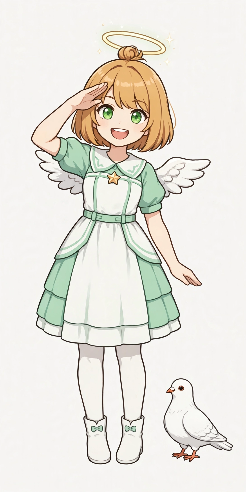
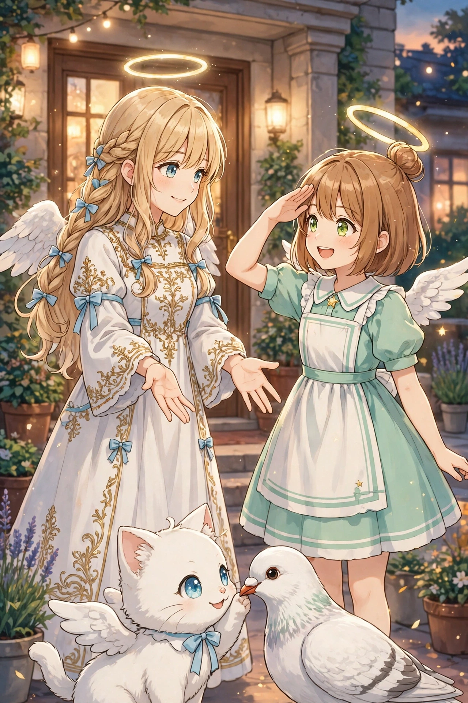
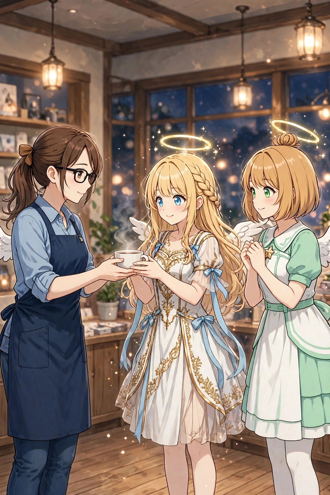
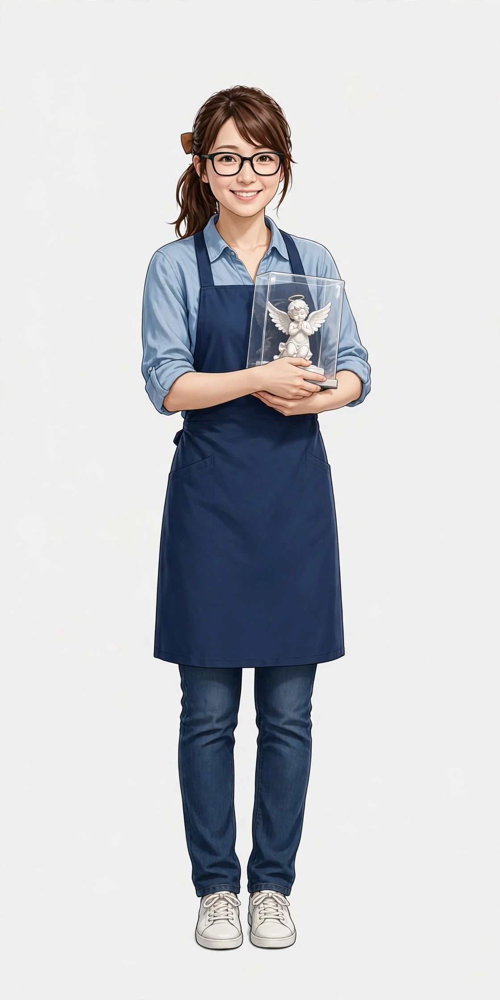
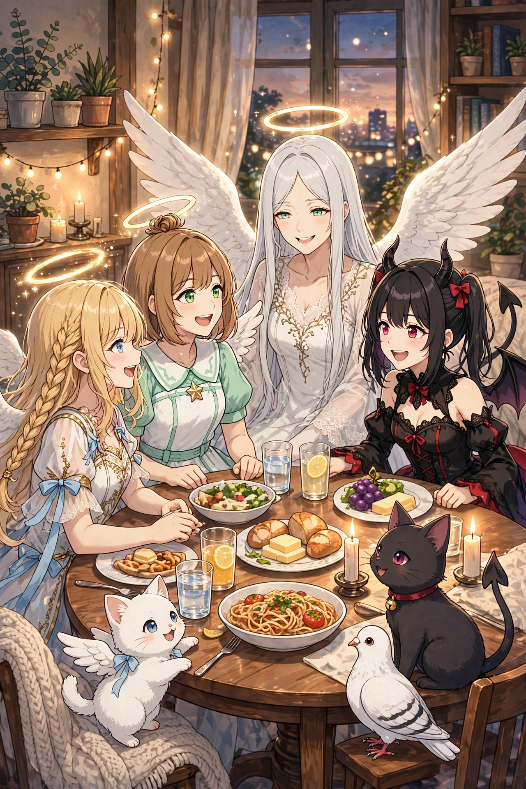

フィオレッタ
セラフィナの後輩の見習い天使。蜂蜜色ショートボブ＋お団子、緑の瞳、輪はいつも少し斜め。相棒は伝書鳩ピッポ。口癖は「セラ先輩！」「わたしもやります！」。

第10弾『クリスマス編』に続く本線の新アーク。ある日、天界からの手紙を伝書鳩ピッポが運んできました。「後輩をよろしく」——地上に降りてきたのは、セラフィナに憧れて見習い天使になったフィオレッタ。輪はいつも少し傾いていて、尊敬する先輩の真似をしては現代文化に前のめりに飛び込み、失敗を繰り返します。今度はセラフィナが「先輩」になる番。コンビニの買い方、スマホ、ガチャ、たこ焼きにカラオケ。かつての自分を見ているようで微笑ましいセラフィナと、「後輩まで染まっていく」と頭を抱えつつ結局一緒に楽しむ先輩ガブリエラ、後輩を堕落作戦の的にしようとして逆に懐かれてしまう見習い悪魔ルチア。
そして、日本橋のフィギュア店の店員・二宮ゆかりが本格登場。人間側の視点と「癒される側」を担い、セラフィナの小さな癒しが届く場面も収録しました。後輩に「こっちの世界の作法」を教えるうちに、セラフィナ自身が自分の染まり具合に少しだけ気づく——そんな見どころのある30場面です。
ダウンロード販売（ZIP 3分割）／全年齢／BOOTH「angel222」で販売中
| タイトル | セラフィナ 第11弾『後輩降臨編』イラストパック30点｜見習い天使の現代日本コメディ |
|---|---|
| 収録内容 | イラスト30点（ダウンロード販売・ZIP 3分割） |
| 価格 | 500円 |
| 販売 | BOOTH「angel222」 https://angel222.booth.pm/items/9088184 |
| 初登場 | フィオレッタ（後輩の見習い天使）／二宮ゆかり（日本橋のフィギュア店員）／ピッポ（伝書鳩） |
| 備考 | 全年齢。登場するキャラクターは架空の存在です。イラストにはAI生成を含みます |




セラフィナの後輩の見習い天使。蜂蜜色ショートボブ＋お団子、緑の瞳、輪はいつも少し斜め。相棒は伝書鳩ピッポ。口癖は「セラ先輩！」「わたしもやります！」。

26歳、日本橋のフィギュア店の店員。初の人間レギュラー。茶色ポニーテールに黒縁眼鏡、紺エプロン。オタク用語に明るく、接客は丁寧。

今回のセラフィナは教える側。後輩の失敗に、自分の降臨初日を重ねます。
物語の次は、第12弾『メイドリフレ修行編』です。